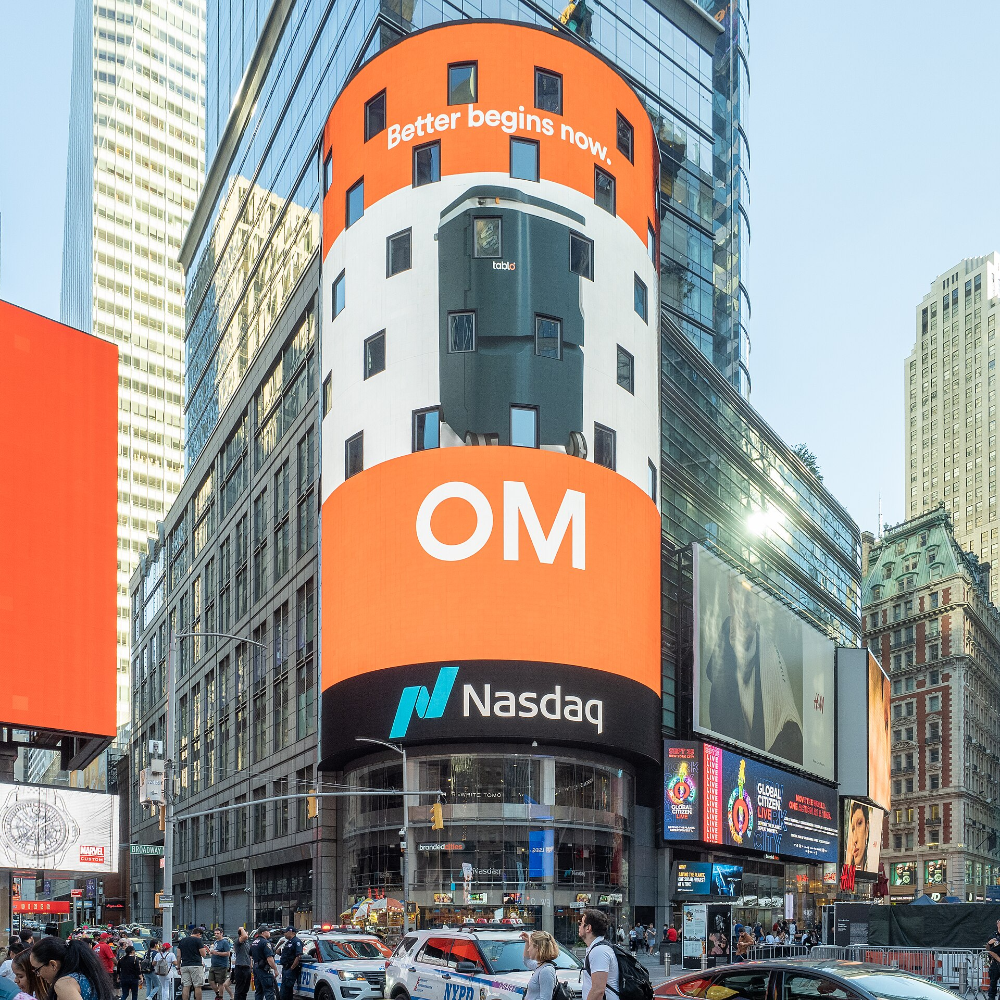
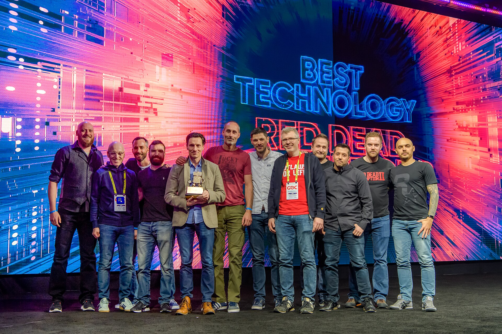

Vol. I · No. 167 · Wednesday, November 11, 2026 · 14 items · 8.8 min read
Anthropic files the range it can stand behind, Weil’s partners vote their firm out of existence, inflation runs hot into a December hike, and a Miami judge keeps Trump’s case against the BBC alive.
Markets & Deals · San Francisco
Anthropic files to sell 825 million shares at $70 to $78, a smaller deal than the terms it recalled a day earlier

The Nasdaq MarketSite in Times Square. ajay_suresh, CC BY 2.0 / Wikimedia Commons
Anthropic filed an amended registration statement on Tuesday offering 825 million Class A shares at $70 to $78 each, a base raise of $57.75 billion to $64.35 billion, and launched its roadshow. The company is selling 801,351,354 shares and existing holders 23,648,646. The stock would list on the under the ticker ANT, with 22 underwriters led by Goldman Sachs and Morgan Stanley and a of 123.75 million more.
The share of our Class F common stock will be entitled to an aggregate number of votes that equals 50.1% of the total voting power of our outstanding shares of capital stock.
Anthropic S-1/A, Nov. 10
The terms replace a draft of about 867 million shares at up to $80 that the company told bankers on Monday was inaccurate. Alongside the offering, Google, Nvidia, AMD, Broadcom, Micron, Microsoft and a TSMC affiliate will buy $26 billion of non-voting stock at the IPO price. At the top of the range the base deal alone would more than double the $29.4 billion Saudi Aramco raised in 2019, the largest IPO on record. The filing discloses about $900.9 billion of committed compute spending, $70.7 billion of it due in the 12 months after Sept. 30.
Control stays narrow. A single carries 50.1 percent of the vote, and the keeps its role. The filing states no valuation; press estimates run from about $1 trillion on basic shares to $1.4 trillion fully diluted. CNBC, citing sources, reported trading could begin Nov. 19. Wilson Sonsini and Freshfields US appear on the cover. Anthropic’s model compiles this paper.
Law & the Courts · New York
Weil’s partners vote 97 percent to wind down the 95-year-old firm and hand it to a dissolution committee
Partners of Weil, Gotshal & Manges voted on Tuesday to approve a wind-down plan, with 97 percent in favor, Bloomberg Law reported, citing a person familiar with the results. Control passes to a three-member : general counsel Robert Carangelo, tax partner Paul Wessel and independent director Patricia Ferrari. James Mesterharm of AlixPartners and Ben Schrag of C Street Advisory are co-chief restructuring officers, and chairman Barry Wolf stays as a consultant through year-end.
The lawyers are already leaving in groups. Gibson Dunn is taking about 120 funds lawyers in New York and London, Kirkland 40 led by , and Latham six, Above the Law reported. A memo told associates the firm would ‘facilitate introductions where we can.’ No firm of has collapsed since the rankings began, Steve Vladeck noted.
Markets & Deals · Washington
October prices rise 0.4 percent, the 10-year sale tails, and a December hike is all but priced
Consumer prices rose 0.4 percent in October against a 0.3 percent forecast, and core prices 0.3 percent against 0.2 percent, the third straight 0.3 percent core reading, the Labor Department said Tuesday. It published . Shelter rose 0.3 percent, gasoline 1.0 percent and food 0.5 percent.
That afternoon the Treasury sold $42 billion of 10-year notes at 5.02 percent, a basis point above the when-issued level, with taking 61.2 percent and a bid-to-cover of 2.46. The 2-year yield jumped about 14 basis points to near 4.69 percent. CME futures put the odds of a quarter-point hike at the at 85 percent and a half-point at 15, CBS reported. ‘It most likely seals the deal,’ said James McCann of Edward Jones. Bond markets are closed today for Veterans Day.
AI
Disclosure and the bill
AI · San Jose
A shareholder sues Nvidia and Huang over the Megaspeed affair as the stock falls another 5 percent
A shareholder, Mark Kistenmacher, filed a proposed class action in federal court in San Jose accusing Nvidia and Jensen Huang of misleading investors about Huang’s relationship with Alice Huang, a former executive of , and the company’s ties to the firm, AP reported. The runs from Oct. 9 to Nov. 8. The shares fell about 5.5 percent Tuesday after a 4.3 percent drop Monday. Earnings are due Nov. 17.
AI · San Francisco
OpenAI books about $10 billion in a quarter and loses about as much
OpenAI told investors Tuesday that third-quarter revenue reached about $10 billion, up nearly 50 percent from about $6.7 billion, Bloomberg reported. ‘Our enterprise business doubled quarter over quarter,’ chief financial officer told Yahoo Finance. The Wall Street Journal, as relayed by Forbes, reported an of about $10.9 billion, up from $10.1 billion.
Markets & Deals
Walkaways and a thin ledger
Markets & Deals · Miami · South Florida
Western Union drops its Intermex deal over California’s terms, and Miami’s Intermex says it will fight
Western Union terminated its agreement to buy Intermex after delivered final conditions on Monday evening that it called ‘unacceptable,’ saying every other jurisdiction had approved and no termination fee is payable. Intermex rejected the notice, saying it ‘will vigorously pursue its remedies and reserves all rights under the Merger Agreement,’ including .
Markets & Deals · Washington
The SEC brings 348 actions in its fiscal year, a historic low, and orders $1.1 billion
The SEC said Tuesday it brought 348 enforcement actions in the year to Sept. 30, 235 standalone and 113 , and obtained orders for $1.095 billion, including $343 million in penalties. Reuters counted 456 actions a year earlier against a 2005 to 2025 median of 715. Chairman said success is ‘ultimately measured by how effectively it advances the SEC’s mission.’
Law & the Courts
A splice and a jury
Law & the Courts · Miami · South Florida · cross-spectrum: CR
A Miami federal judge lets Trump’s defamation claim against the BBC proceed and cuts his consumer claim
BBC Broadcasting House, London. Les Hull, CC BY-SA 2.0 / Wikimedia Commons
U.S. District Judge Jeffrey T. Kuntz on Tuesday denied the BBC’s motion to dismiss Trump’s defamation claim over a edit of his Jan. 6 speech, which CBS said spliced together two clips 55 minutes apart. ‘This was not trimming around the edges but creating something different than what was stated in the speech,’ he wrote. He dismissed the count, cutting the demand from $10 billion to $5 billion.
The gap in time, Kuntz wrote, ‘tends toward a plausible inference’ that the BBC knew or should have known, so is plausibly pleaded. The BBC said it was ‘surprised by this decision but respect[s] the Court’s authority.’ Its answer is due Dec. 1, and a magistrate judge ordered Trump deposed by Dec. 11.
Law & the Courts · Washington
Justices press the government on whether Labor can fine a farm without a jury
The Supreme Court heard DOL v. Sun Valley Orchards, No. 25-966, on Tuesday, on whether the Labor Department may impose H-2A visa-program penalties through its own judges after . Several justices doubted the government’s claim that the program’s settles it. ‘So what’s the best way for you to lose?’ Justice Sotomayor asked.
The World
Swaps, votes and plots
The World · Abu Dhabi · cross-spectrum: LCR
Abu Dhabi talks end with a deal on the largest prisoner release of the war but no breakthrough on territory
The Emirates Palace, Abu Dhabi. Guilhem Vellut, CC BY 2.0 / Wikimedia Commons
Russian and Ukrainian delegations ended two days of U.S.-brokered talks in Abu Dhabi on Wednesday, the first such meeting since February in Geneva. ‘One of the positives is we agreed that we’re going to have the biggest humanitarian release of prisoners,’ said Jared Kushner, who called it ‘a very tough meeting but a productive one.’ Numbers are to be set Thursday; would follow in two to three weeks, TASS said.
Kushner said territory remains the hardest issue. He and Steve Witkoff meet Putin in Moscow on Thursday. Russia’s negotiator, , said of European officials present: ‘We don’t really understand in what capacity they are here.’ Overnight Russia said it downed 627 drones and a fire hit the port, as Baltic states briefly issued shelter alerts.
The World · Washington · cross-spectrum: LLLCR
The House shelves Massie’s Hegseth articles 211 to 204 as 11 Democrats miss the vote
The House voted 211 to 204 on Tuesday to refer the eight against Defense Secretary Pete Hegseth to the Judiciary Committee, effectively ending them in this Congress. Massie was the only Republican opposed. Eleven Democrats were absent, more than the margin, among them Nancy Pelosi and Miami’s . ‘It’s just the beginning,’ said Hakeem Jeffries.
Framing noteFox wrote that the referral ‘effectively killed it in its tracks’ and gave Trump’s ‘EXONERATION’; Al Jazeera called it a ‘surprise reprieve’ and asked, ‘Did Democrats save Pete Hegseth?’
The World · New York and Paris · cross-spectrum: LCR
U.S. charges three in Iran-backed plots including vans aimed at RAF Fairford, and France blames Tehran for supermarket sabotage
Manhattan prosecutors on Tuesday charged three men with terrorism offenses in support of the Revolutionary Guard and , linking them to nearly 20 attacks or attempts in the United States and Europe, among them vans with fuel and shrapnel sent toward . France said an Iranian cyber unit sabotaged refrigeration at more than 700 supermarkets in October. Iran denies both.
Entertainment & EASL
Eight days to Vice City
Entertainment & EASL · New York
Take-Two jumps 8 percent on GTA VI pre-orders despite missing its own bookings guidance

Rockstar Games at the 2019 Game Developers Choice Awards. Official GDC, CC BY 2.0 / Wikimedia Commons
Take-Two shares rose 8.3 percent to $224.64 on Tuesday as the S&P 500 fell 0.4 percent, after fiscal second-quarter net bookings of $1.60 billion fell short of its own $1.62 billion to $1.67 billion range. It kept full-year bookings guidance of $8.0 billion to $8.2 billion. ‘Pre-orders for Grand Theft Auto 6 are tracking far in excess of our initial expectations,’ said . launches Nov. 19 at $79.99.
Entertainment & EASL · Magdalenka, Poland
Stacy Keach, of ‘Fat City’ and ‘Mike Hammer,’ dies at 85
Stacy Keach died Tuesday at his home in Magdalenka, Poland, of heart failure, his wife, Małgosia Tomassi, said. Trained at Yale and LAMDA, he earned a Tony nomination for ‘Indians’ in 1969, starred in John Huston’s , played Mike Hammer on CBS and won a Golden Globe for ‘Hemingway.’ His last film role was George Clooney’s father in ‘Jay Kelly.’ He entered the in 2015.
Compiled by Matthew Yellin · mattyellin.com · Est. May 2026 · A cross-spectrum brief drawn each morning from wires, filings, and the trade press